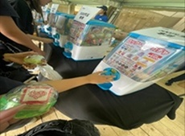
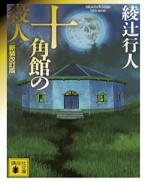

趣味・好きなこと
趣味
パン作りやフェス・ライブ、旅行など沢山趣味がありますが、特に好きなのが
ガチャガチャです。よく友人とガチャガチャ巡りをしています。
好きなこと
家にいるよりは外にいるほうが好きです。※時と場合による
アウトドア派ですが youtubeや小説、映画鑑賞なども好きです。
お気に入りのもの
ガチャガチャ

2025年の9月に千葉で行われたロックインジャパン
フェスティバルの会場限定でまわせるガチャガチャ
です。お気に入りのガチャガチャの一つです。
小説
- 十角館の殺人

十角館の殺人は推理小説の中でもとても有名で人気な作品です。孤島の十角館を訪れた大学ミステリ研の７人が連続殺人に巻き込まれてしまうお話です。
- そして８日目に愛を謳った。
一番好きな小説です。この小説は私が小説を読むようになったきっかけの一つです。 本心を隠して周囲に合わせて生きてきた女子高生があるクラスメイトとの出来事をきっかけに自分の心や周りの環境に向き合っていくお話です。